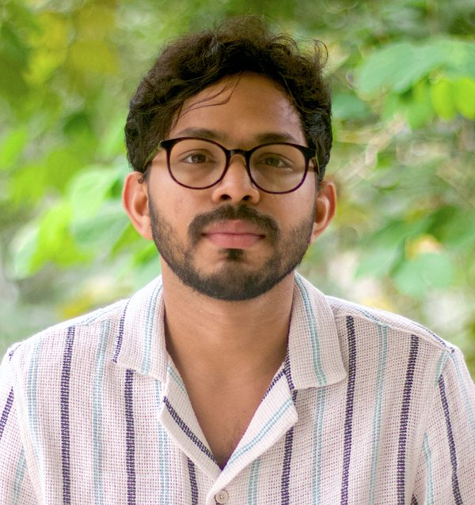
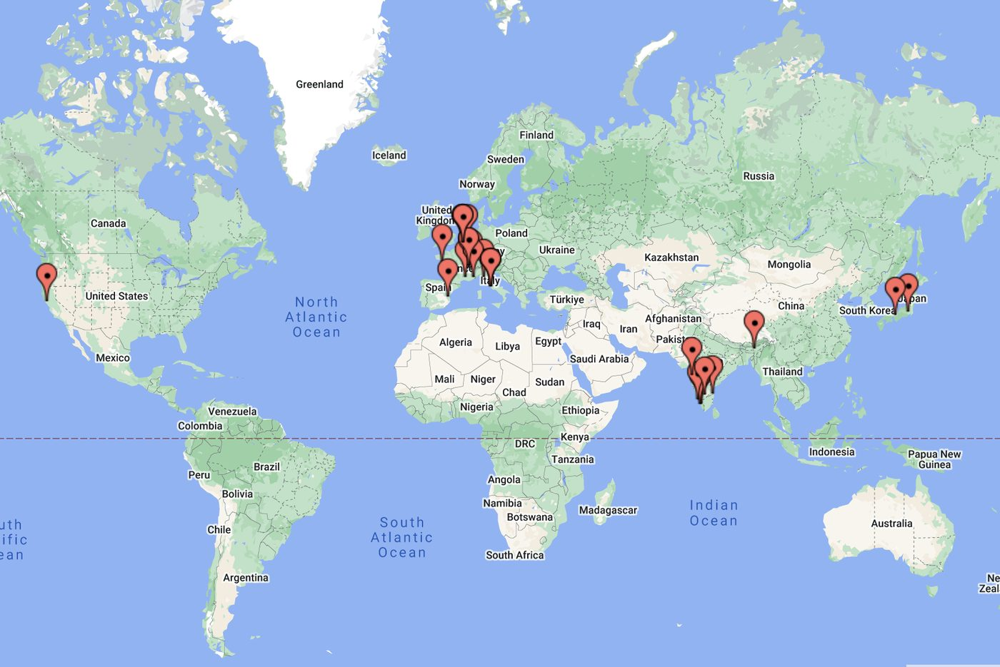
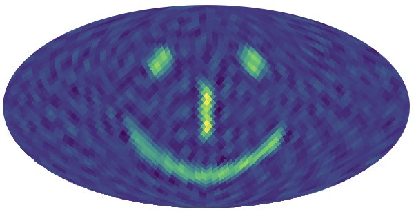

I am a Henri Poincaré Fellow at the Observatoire de la Côte d'Azur, Nice, France. My primary research focuses on the search for the stochastic gravitational-wave background (SGWB), which could originate from cosmological or astrophysical sources, using data from the LIGO, Virgo, and KAGRA (LVK) detectors. We have placed the most stringent bounds on the energy density of SGWBs using the latest LVK observational data and produced the first upper-limit maps of the gravitational-wave sky across every frequency bin. We expect that current efforts will lead to significant progress in the coming years, potentially resulting in the first detection of SGWBs.
During my Ph.D., I worked on various aspects of alternative theories of gravity, exploring the thermodynamic properties of black hole solutions through the lens of Geometrothermodynamics, a formalism based on concepts from differential geometry. In the past, I also examined different dark energy models and methods to characterize them.
Academic history (in the reverse chronological order):
-
Henri Poincaré Fellow, October 2024 – present
ARTEMIS,
Observatoire de la Côte d'Azur
Nice, France. -
Post-doctoral fellow, October 2021 – September 2024
Centre for Cosmology, Particle Physics and Phenomenology (CP3),
Institut de Recherche en Mathématique et Physique (IRMP),
Université catholique de Louvain, Belgium. -
Post-doctoral fellow, February 2019 – September 2021
Institute for Cosmic Ray Research (ICRR),
University of Tokyo, Japan. -
Post-doctoral fellow, August 2016 – January 2019
The Inter-University Centre for Astronomy and Astrophysics (IUCAA), Pune, India. -
Ph.D. Physics, September 2014 – August 2016
Cochin University of Science and Technology (CUSAT), Kochi, Kerala, India. -
University Grant Commission Research Fellow, November 2012 – September 2014
Department of Physics,
Cochin University of Science and Technology (CUSAT), Kochi, Kerala, India.
You can find the details in my CV

My research interests
My primary research interest at present is searches for stochastic gravitational wave background, superposition of sources too weak to detect individually, using ground-based interferometers.
Topics of my interest include:
- Gravitational Waves (GW)
- Theoretical aspects of general theory of gravity
Group
I am a Henri Poincaré Fellow at the Observatoire de la Côte d'Azur in the ARTEMIS research group led by Nelson Christensen. The ARTEMIS group has been contributing a significant effort to the search for gravitational wave background (GWB) and the publication of its results. Furthermore, the group actively works on developing and maintaining different analysis pipelines used in different LIGO-Virgo-KAGRA group. For more details: ARTEMIS

Publications and pre-prints
Some of my recent publications and preprints, in the reverse chronological order, is given below. The entire list of publications can be found at iNSPIRE and ORCiD.
Updated automatically from INSPIRE-HEP.
- T. Regimbau, J. Suresh, "A mock data challenge for next-generation detectors", [arXiv:2506.12237].
- S. Venikoudis, F. De Lillo, K. Janssens, J. Suresh, G. Bruno, "Impact of correlated magnetic noise on directional stochastic gravitational-wave background searches", Phys.Rev.D 111 (2025) 8, 082005 [arXiv:2411.11746].
- F. De Lillo, J. Suresh, "Estimating Astrophysical Population Properties using a multi-component Stochastic Gravitational-Wave Background Search", Phys.Rev.D 109 (2024) 10, 103013 [arXiv:2310.05823].
- K. Z. Yang, J. Suresh, G. Cusin, S. Banagiri, N. Feist, V. Mandic, C. Scarlata and I. Michaloliakos, "Measurement of the cross-correlation angular power spectrum between the stochastic gravitational wave background and galaxy overdensity", Phys.Rev.D 108 (2023) 4, 043025, [arXiv:2304.07621].
- D. Agarwal, J. Suresh, S. Mitra, A. Ain, "Angular power spectra of anisotropic stochastic gravitational wave background: developing statistical methods and analyzing data from ground-based detectors", Phys.Rev.D 108 (2023) 2, 023011, [arXiv:2302.12516].
- F. De Lillo, J. Suresh, A. Depasse, M. Sieniawska, A. L. Miller and G. Bruno, "Probing Ensemble Properties of Vortex-avalanche Pulsar Glitches with a Stochastic Gravitational-Wave Background Search", Phys.Rev.D 107 (2023) 10, 102001, [arXiv:2211.16857].
Contact details:
Address:
ARTEMIS, Observatoire de la Côte d'Azur
Boulevard de l'Observatoire, CS 34229
06304 Nice Cedex 4, France.
E-mail:
jishnu.suresh'at'oca.eu